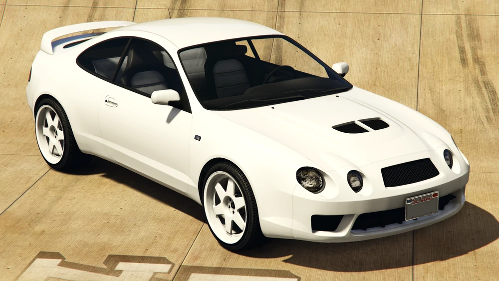
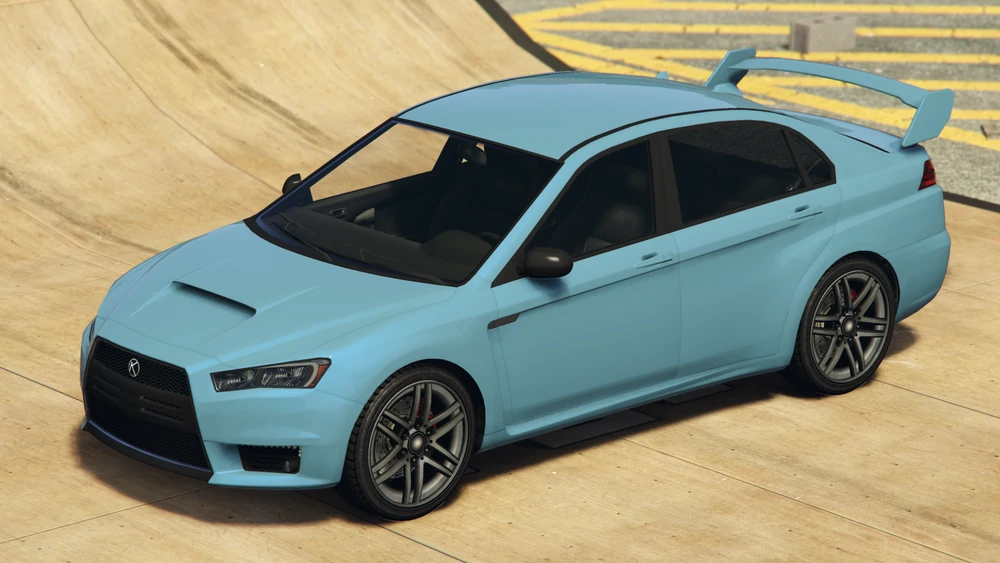
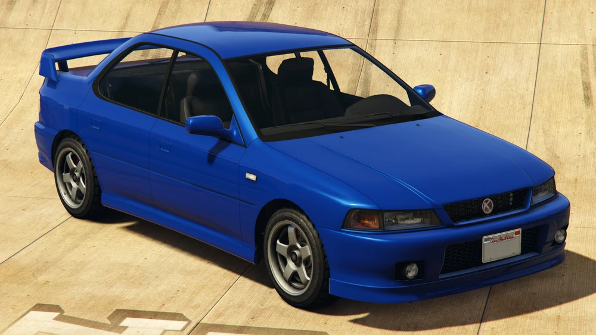
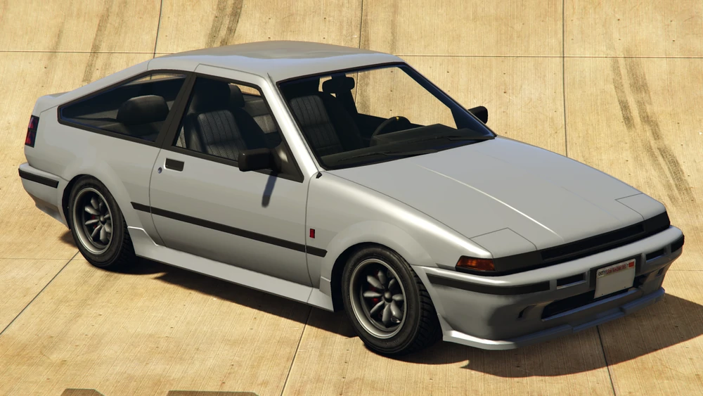
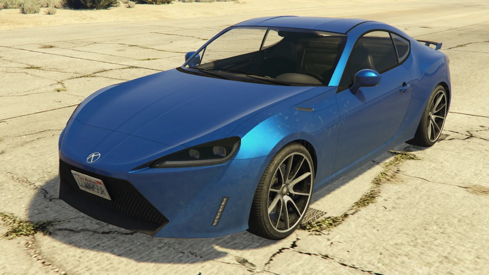
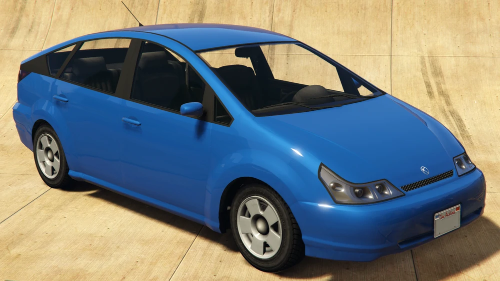
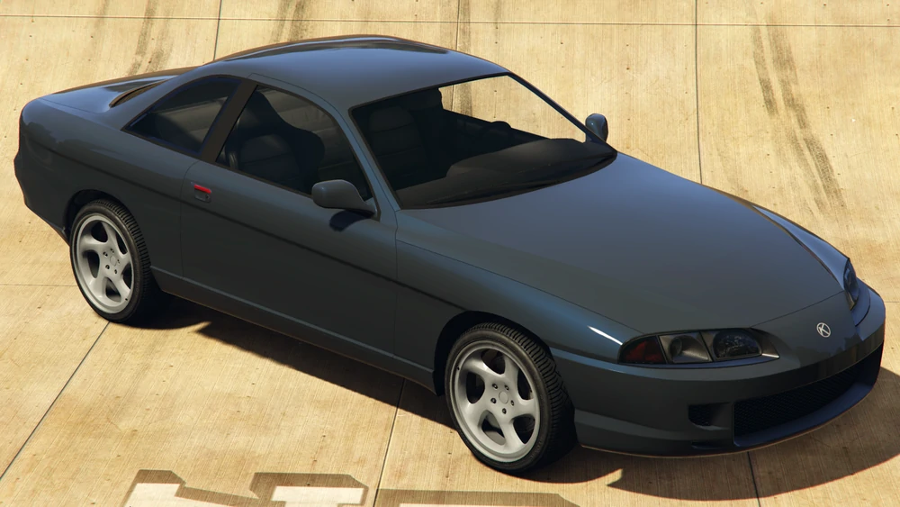
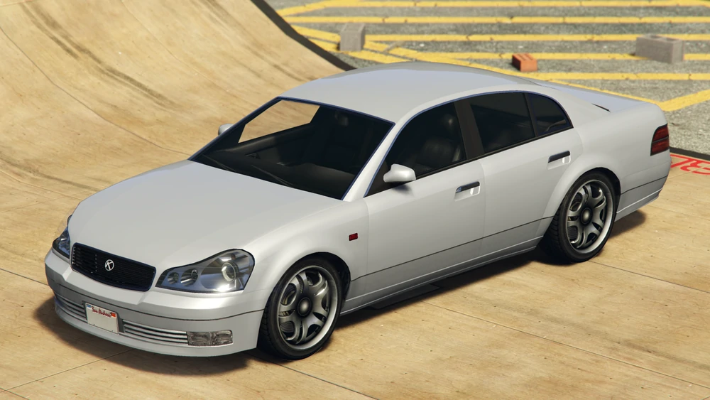
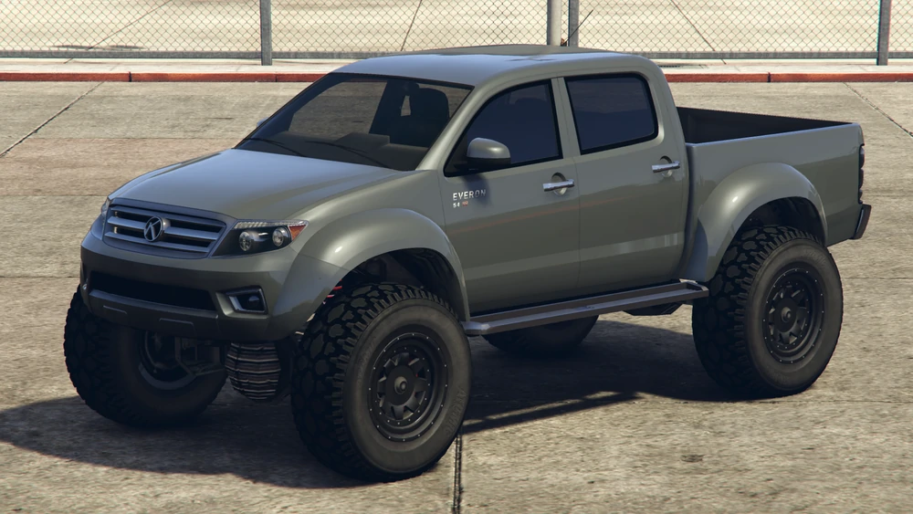

Nuestro Catalogo
Calico GTF
El Calico GTF es propulsado por un motor seis cilindros en línea de 2.0L de desplazamiento con un solo turbo. Tiene una caja de cambios de 5 velocidades y un diseño de tracción a las cuatro ruedas (48% delantero, 52% trasero). Su comportamiento controlado y firme lo hace ideal para cualquier aficionado de la velocidad , sea en la tierra o en el asfalto.
Conoce MásKuruma
El Kuruma tiene un motor de seis cilindros en línea con doble arbol de levas, colocado longitudinalmente y diseño de tracción total (una distribución bastante única de 1/3 de la potencia del motor a las ruedas delanteras y el resto a las ruedas traseras). El automóvil tiene una caja de cambios de 6 velocidades, una velocidad máxima de 237 km/h y pesa 1300 kg.
Conoce MásSultan Classic
El Sultan Classic está propulsado por un motor de 6 cilindros y doble arbol de levas equipado con turbocompresores gemelos, similar al Sultan estándar que proporciona traccion a las cuatro ruedas, el automóvil funciona bien tanto en el asfalto como en la tierra o la nieve. La distribución del torque es de 50%/50%.
Conoce MásFuto GTX
El Futo GTX está propulsado por un motor de 4 cilindros con cuatro cuerpos de aceleración, similar al Futo original. El distintivo indica que lleva un motor en linea de 20 válvulas (5 válvulas por cilindro) con inyección de combustible, tracción trasera y diferencial de deslizamiento limitado. El sonido del motor es de altas revoluciones y fuerte.
Conoce MásS95
El automóvil está propulsado por un motor Boxer de cuatro cilindros acoplado a una caja de cambios de 6 velocidades en una configuración de motor delantero y tracción trasera. Gracias a esta configuracion el mismo tiene un comportamiento extremadamente deportivo y si se desconecta su control de traccion y estabilidad permite divertidos desplazamientos.
Conoce MásDilettante
El Dilettante funciona con un motor eléctrico a menos de 64 km/h, luego el motor de combustión interna se acciona y envia la potencia a la caja de cambios con una sola velocidad (CVT) la cual propulsa al auto a traves de las ruedas delanteras . El motor de combustión del automóvil también es notable en términos de sonido, con un tono único y estridente.
Conoce MásPrevion
El vehículo está propulsado por un motor V8 equipado con un sobrealimentador. Dicho motor está acoplado a una caja de cambios de 5 velocidades, accionando las ruedas traseras. Gracias a esta configuracion el mismo tiene un comportamiento extremadamente deportivo y si se desconecta su control de traccion y estabilidad permite divertidos desplazamientos.
Conoce MásIntruder
El Intruder tiene un motor V8 de 4.3 litros que impulsa las ruedas traseras a través de una caja de cambios de 5 velocidades. El Intruder no es un automóvil pensado para ser deportivo; pero tiene una tasa de aceleración razonable, y una velocidad máxima alta. Gracias a su suspension suave es un automovil perfecto para la ciudad y los caminos desparejos.
Conoce MásEveron
La Everon tiene un motor potente que le da relativamente buena velocidad en línea recta y potencia para subir pendientes. La tracción en la carretera es promedio, como se espera de una camióneta levantada. Sus neumáticos todoterreno de alto perfil y su distancia al suelo le permiten atravesar montañas de manera eficiente.
Conoce Más